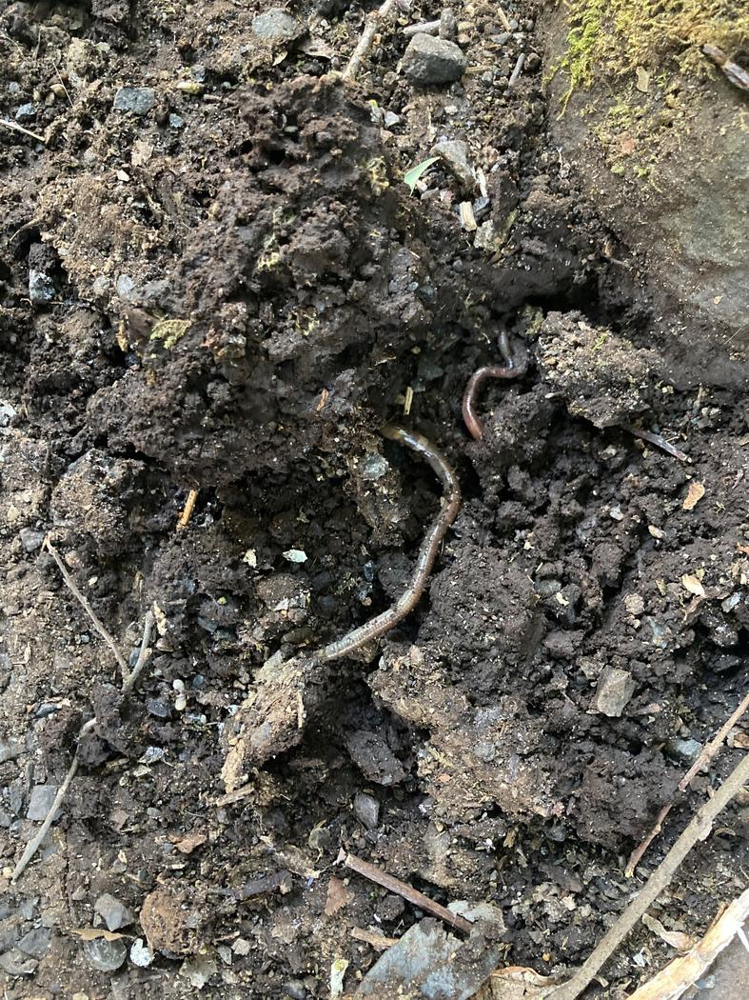
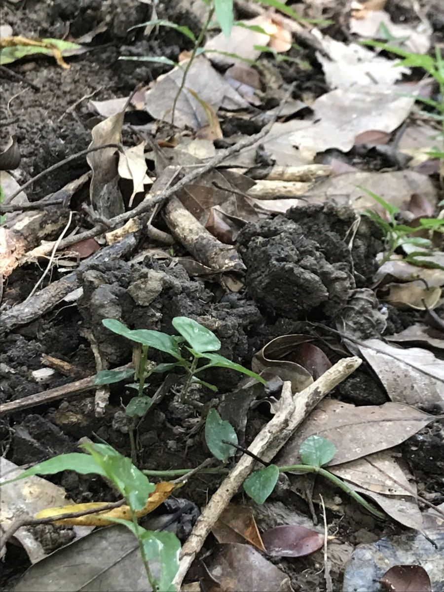
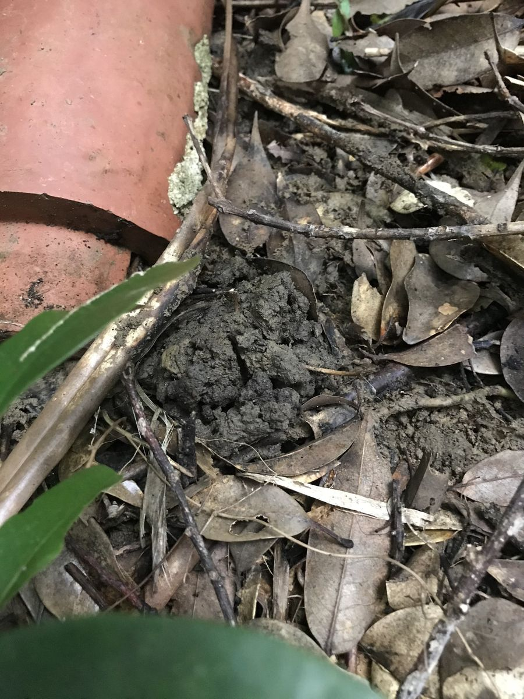
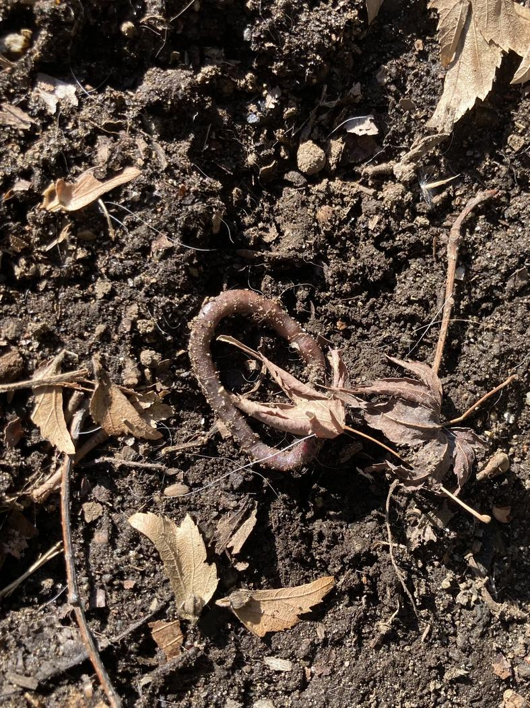
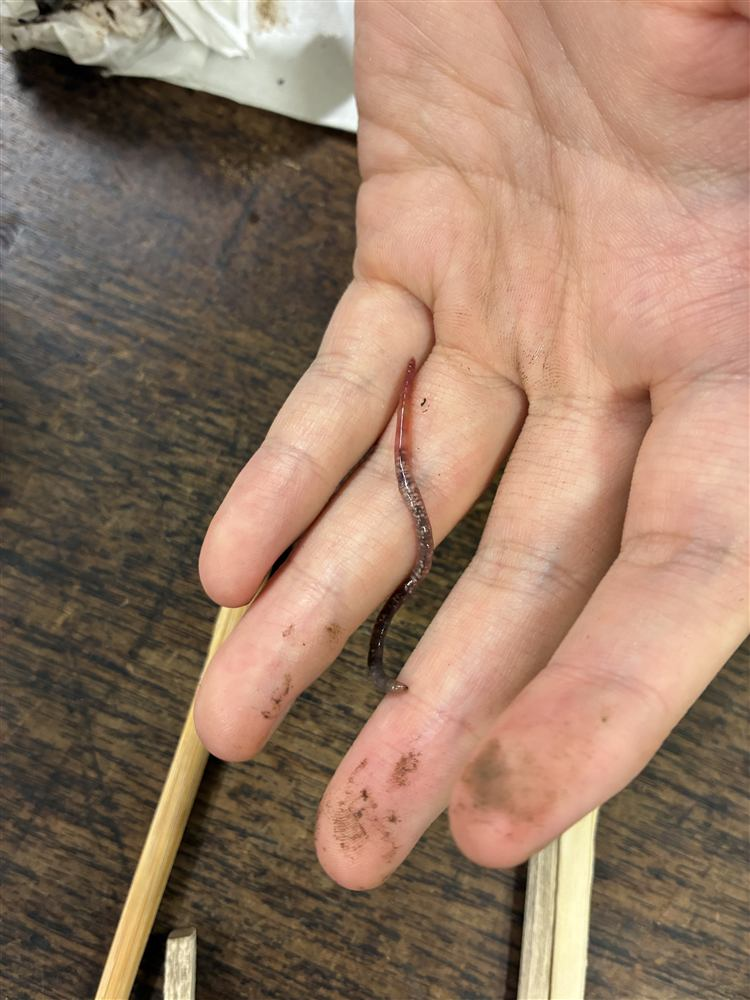
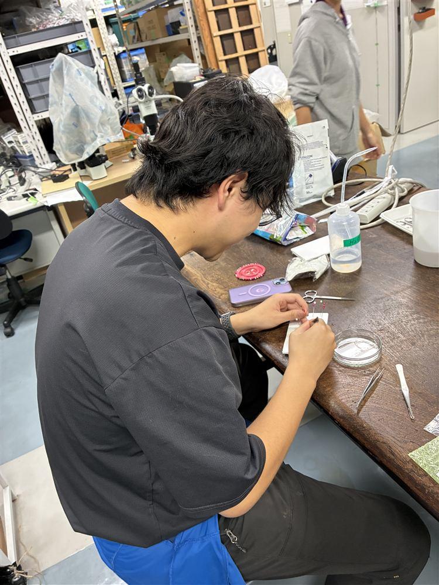
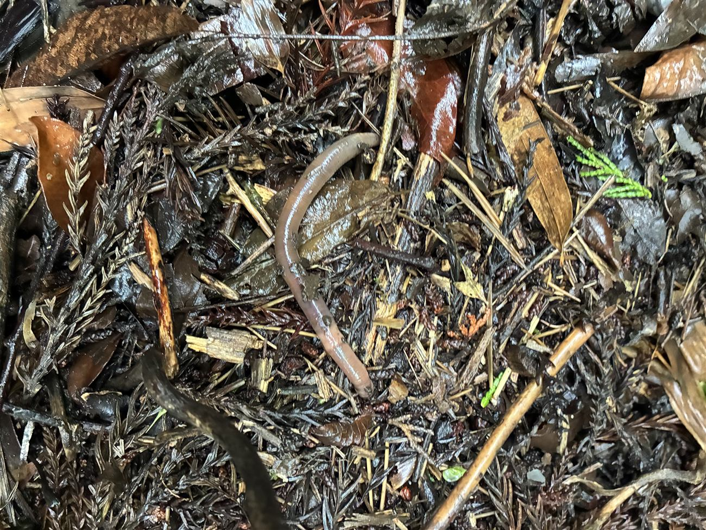

お知らせ
- イベント登壇 代表取締役 遠藤 颯が、株式会社LINOA主催「オープンキャンパス2026」（2026年7月19日開催）に特別ゲストとして登壇します。 →
- メディア掲載 代表取締役 遠藤 颯のインタビュー記事「ミミズへの愛から『地下情報産業』の創出、そして宇宙へ」が株式会社LINOAのサイトに掲載されました。 →
- 資金調達 株式会社リバネスキャピタルが運営する「ジャーミネーション1号ファンド」より出資を受けました。 →
- 参画 株式会社リバネスが立ち上げた、世界初の科学技術を産業へと育てるベンチャーのネットワーク「L VENTURES」に参画しました。 →
- 受賞 株式会社リバネス主催「アグリテックグランプリ2026」（2026年10月3日開催）にて「Bio-Boring 土を掘らずに地中を読む ～ミミズ→土→診断・再生→防災→地球の内なる宇宙へ～」を発表し、フォーカスシステムズ賞を受賞しました。 →
私たちのアプローチ
土壌は地球最大の生命システム。その健全性は、作物や生態系、気候、そして人の健康にまで広がっています。私たちは土壌を起点に、地球全体の健やかさ——プラネタリーヘルス——を捉え直します。しかし「地下」は、いまだ暗黒のフロンティアです。
「地下」は、見えないまま放置されている
- 高コストなボーリング調査に依存
- 得られるのは断片的・局所的なデータにとどまる
- 土壌の「動態」が見えず、変化を追えない
土壌の内部構造、微生物の多様性、水や養分の動き、劣化リスク — その多くが可視化されていません。
生物情報 × 地理空間データで、地下を可視化する
- 生物情報と地理空間データを統合して解析
- 非侵襲・低コストな土壌診断を実現
- 地下断面を可視化するプラットフォームを提供
土壌サンプルや土壌動物の情報を活用し、階層的かつ低コストで土壌の状態や健全性を評価します。
革新的な理由
生物そのものをセンサーとして捉え直すことで、これまで測れなかった地下の情報を引き出します。
生物が測る情報
生活型・系統情報から、土壌の性質を推定。生きものが残す手がかりを、地下の構造へと翻訳します。
動く × 積算する
生物自身が土壌を「処理」しながら移動し、物質循環の動態を記録。点ではなく、時間と空間の流れを捉えます。
市民科学
AIと採集プロトコルで、誰でも調査に参加できる。世界規模のデータ基盤へと広げていきます。
フィールドの記録







これからやりたいこと
フィールドから社会へ。段階的に、地下情報産業を育てていきます。
フィールド調査の拡大
国内外での大規模サンプリングと、データベースの構築。
プロトタイプ開発
ミミズを用いた土壌推定アルゴリズムの実用化。
社会実装
農業・ESG・インフラ分野への、診断サービス提供。
青いミミズに込めた思い
日本のミミズ研究の出発点は、青いミミズ——シーボルトミミズでした。私たちはこの青いミミズへの敬意とともに、「日本のミミズ産業をここから始めたい」という決意を、ロゴに重ねています。
土を育て、資源を循環させ、生き物と人をつなぐ。ミミズが持つその力を、もっと多くの人へ届けたい。研究の原点から未来へ——私たちは青いミミズとともに、新しいミミズ産業の創出に挑戦していきます。
会社概要
- 商号
- 株式会社MIMIZUMIMIZU Earth Innovation Inc.
- 設立
- 2026年（令和8年）5月10日
- 所在地
- 東京都墨田区横川一丁目16番3号
- 代表者
- 代表取締役 遠藤 颯
- 役員
- 取締役 遠藤 颯／浜渦 愛佳／大坂 吉伸
- お問い合わせ
- inc.mimizu@gmail.com